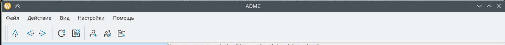
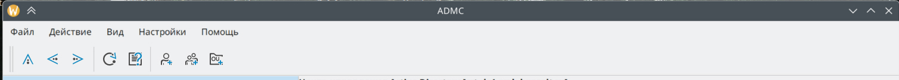

На представленных ниже изображениях продемонстрирован внешний вид программы с новыми иконками.


Ниже приведена таблица с новыми иконками, их соответствующими переменными и описанием.
Таблица с иконками SVG